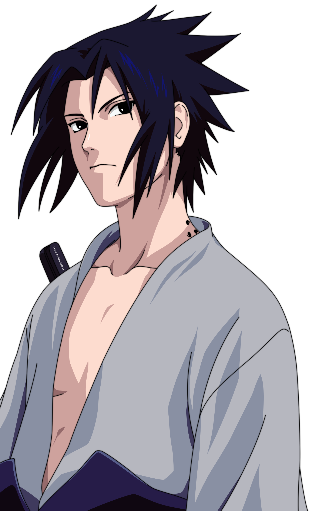
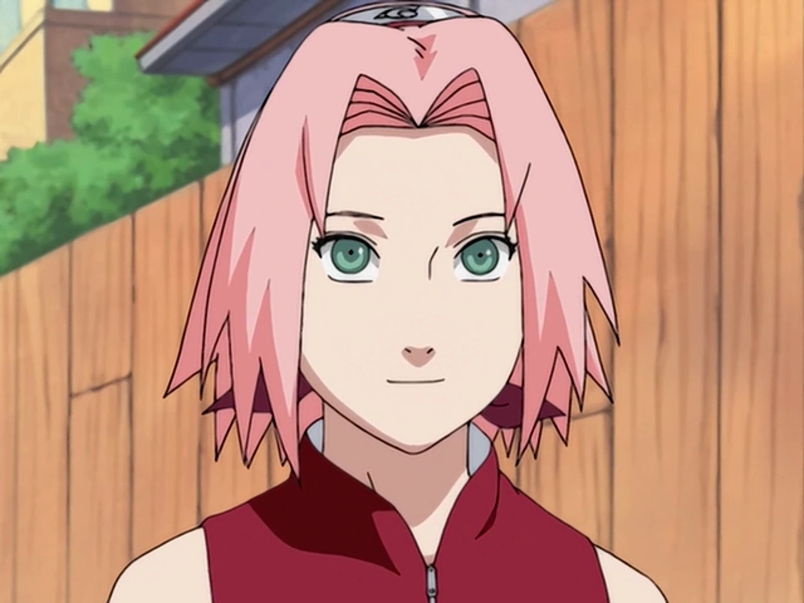

Main Characters
Naruto Uzumaki
Naruto is the main protagonist, He is a shinobi of Konohagakure's Uzumaki clan. He became the jinchūriki of the Nine-Tails on the day of his birth — a fate that caused him to be shunned by most of Konoha throughout his childhood. After joining Team Kakashi, Naruto worked hard to gain the village's acknowledgement all the while chasing his dream to become Hokage. In the following years, through many hardships and ordeals, he became a capable ninja, regarded as a hero both by the villagers, and soon after, the rest of the world, becoming known as the Hero of the Hidden Leaf. He soon proved to be one of the main factors in winning the Fourth Shinobi World War, leading him to achieve his dream and become the village's Seventh Hokage.
A link to Naruto Uzumaki.Sasuke Uchiha
Sasuke Uchiha (うちはサスケ, Uchiha Sasuke) is one of the last surviving members of Konohagakure's Uchiha clan. After his older brother, Itachi, slaughtered their clan, Sasuke made it his mission in life to avenge them by killing Itachi. After learning the truth of his brother's sacrifice, later proving instrumental in ending the Fourth Shinobi World War, and being happily redeemed by Naruto, Sasuke decides to return to Konoha and dedicate his life to help protect the village and its inhabitants, becoming referred to as the "Supporting Kage".
A link to Sasuke UchihaSakura Haruno
Sakura Haruno is a member of Team 7 and a chūnin-level kunoichi of Konohagakure. She is a medic and was trained by Tsunade, the Fifth Hokage, in both medical ninjutsu and combat. She is Sasuke Uchiha's wife and the mother of their daughter, Sarada Uchiha. In Naruto Shippuden, she becomes a taijutsu and medical jutsu specialist.
A link to Sakura Haruno.Madara Uchiha
Madara Uchiha is an antagonist in Naruto Shippuden. He was once the leader of the Uchiha Clan and aided in the founding of Konohagakure no Satō (Hidden Leaf Village). He battled with the First Hokage, Hashirama Senju, over the issue of leadership. Madara Uchiha was the legendary leader of the Uchiha clan who founded Konohagakure alongside his rival, Hashirama Senju, with the intention of beginning an era of peace. When the two couldn't agree on how to achieve that peace, they fought for control of the village, a conflict which sadly ended in Madara's death. He is the One of the Greatest Villian you can ever find in Anime history.
A link to Madara Uchiha.